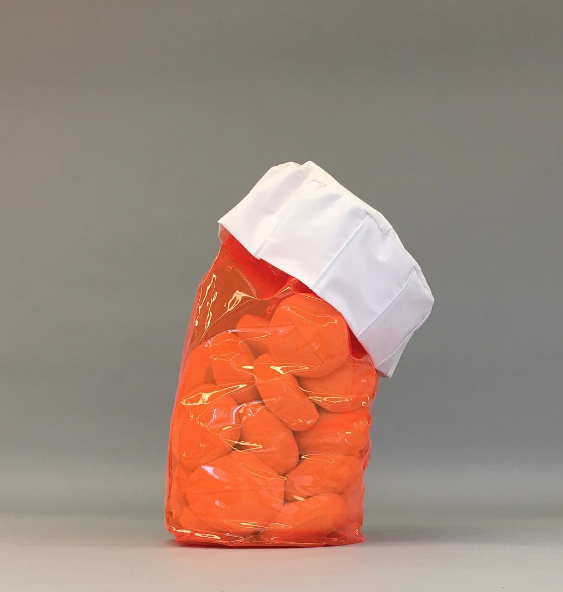
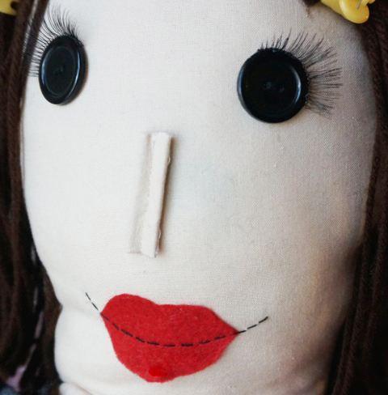

food
/
jewelry
/
mobile
/
video
Click on different images to see the various ways I use fabric and sculpey! :-) :-) :-) :-) :-) :-) :-) :-) :-) :-) :-) :-) :-) :-) :-) :-) :-) :-) :-) :-) :-) :-) :-) :-) :-) :-) :-) :-) :-) :-) :-) :-) :-) :-) :-) :-) :-) :-) :-) :-) :-) :-) :-) :-) :-) :-) :-) :-) :-) :-) :-) :-) :-) :-) :-) :-) :-) :-) :-) :-) :-) :-) :-) :-) :-) :-) :-) :-) :-) :-) :-)
Jodi Shares Sculpey
My Friend Will Be Me Takes the BFA 2018 Red Carpet
American Francophile Really Thinks She Has a Chance

Fabricated Sleep

My Friend Will Be Me
Props for Joey's Allegory of the Cave
1000/100%
Mm...food
 food / jewelry / mobile / video
food / jewelry / mobile / video